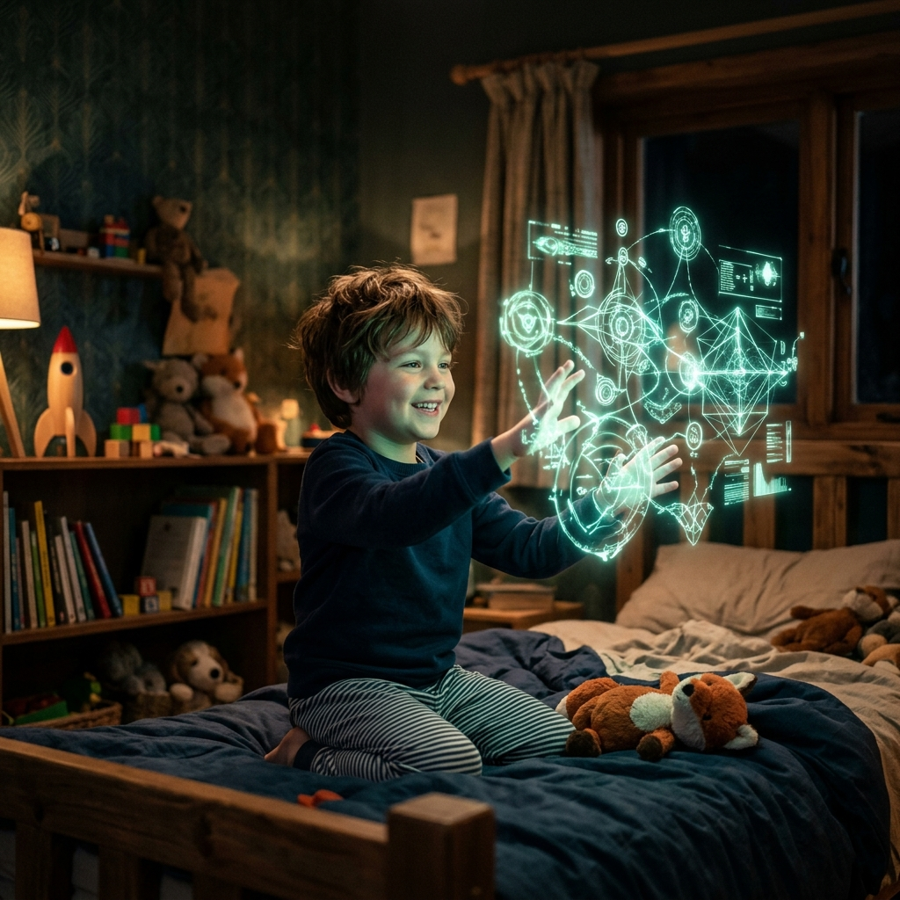
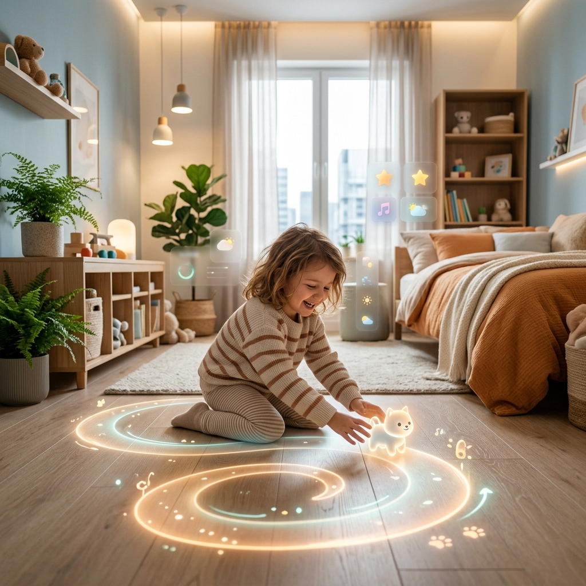

نحن لا نقدم مجرد "تطبيق" آخر، بل نقدم تحولاً جذرياً في مفهوم النفاذ الرقمي، ونصوغ مقترحنا تحت مظلة "التقنيات الخفية".
اكتشف سَنَع
في السباق الرقمي المحموم، سقطت فئة غالية من أطفالنا - ذوي الإعاقة الذهنية البسيطة وتشتت الانتباه - في فجوة معرفية سحيقة. سَنَع هي تكسير قيد الشاشة كلياً. إننا لا نطلب من الطفل أن يتكيف مع التكنولوجيا؛ بل نجعل التكنولوجيا تذوب، وتختفي، وتتكيف مع بيئته الحركية.
حيث يصبح صنبور المياه، وخزانة الملابس، وحتى نبض قلب الطفل، هي واجهة الاستخدام (Contextual UI).
مستلهم من كتاب "تكنولوجيا المهارات: نقل وترسيخ المهارات الرقمية" للمستشار عبدالله السلحوت والمهندس عبدالرحمن خميس.
المعرفة المجردة على الشاشات تسبب (Cognitive Overload) عبئاً معرفياً. في سَنَع، نرسخ المهارات حركياً في ذاكرة الطفل وعضلاته، لتصبح التكنولوجيا خادماً لتعقيدات الحياة، وليس عبئاً إضافياً.
تبدأ بالتوجيه بالصوت المكاني ليستيقظ، ثم يستخدم الملصقات السحرية والقفاز الذكي لارتداء ملابسه.
إذا توتر، يتدخل "النبض الهادئ" لتهدئته بتمارين التنفس.
يتعلم مهارات التواصل أمام "المرآة الاجتماعية"، ويدرب تركيزه بلعبة "طاقة العقل". ويرتب غرفته بـ"المسار المضيء".
كل مهارة يتقنها تُسجل تلقائياً في "جواز سفره المهاري".
اكتشف كيف تحوّل سَنَع محيط الطفل إلى واجهة تفاعلية خفية (انقر على النقاط المضيئة)

التقنيات الخفية تدمج التعليم داخل البيئة المادية. جرب التفاعل مع عناصر الغرفة.
احسب التوفير المالي المجتمعي التقديري عند تبني تقنيات سَنَع.
توفير من تكاليف التربية الخاصة
مهارة مكتسبة على البلوك تشين
تطوير المستشعرات والنظام المركزي.
الشراكات والتقييم مع النادي العلمي لاختبار النظام.
إطلاق جواز السفر المهاري عبر البلوك تشين.
التوسع الوطني والدمج في برامج التربية الخاصة الشاملة.